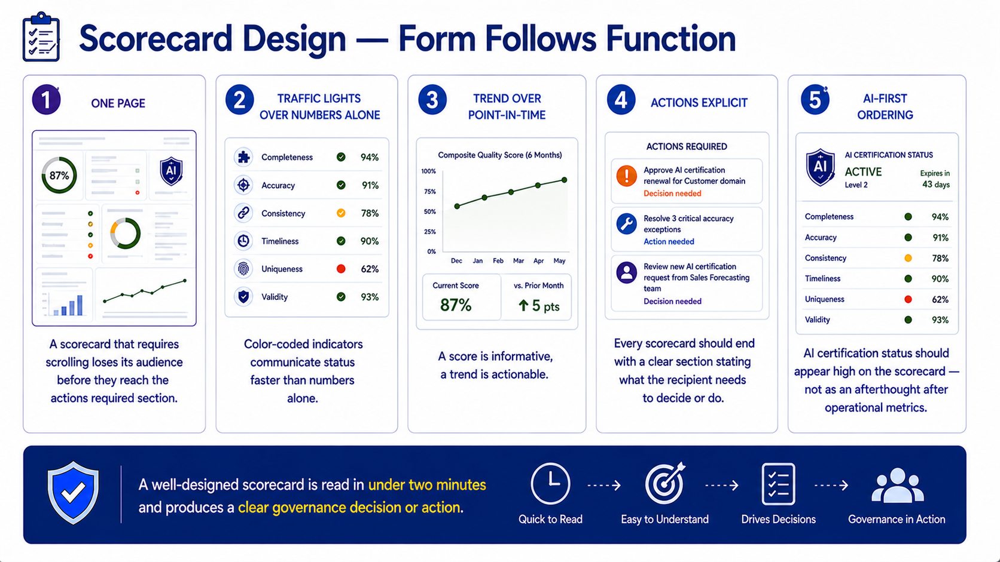
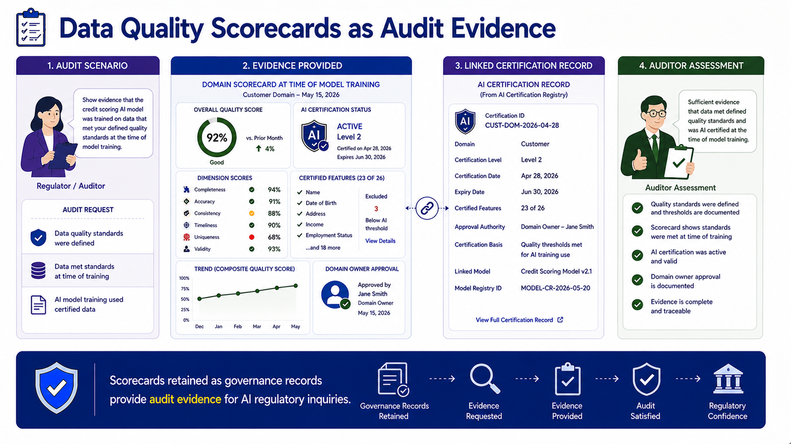
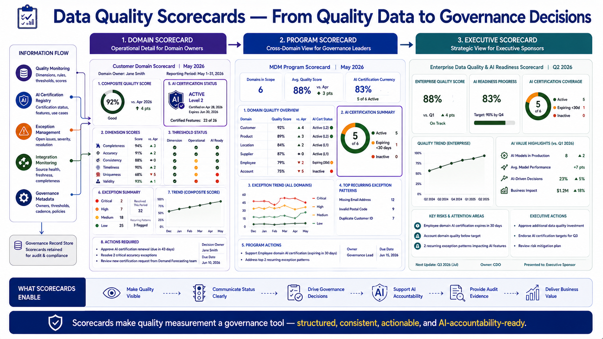

Data Quality Scorecards
Module support notes
Scorecard Design Principles
Scorecard design is a communication discipline as much as a measurement discipline. A scorecard that is too detailed to read quickly defeats its own purpose — the domain owner who receives a 12-page quality report will read the summary and ignore the detail, which means the detail serves no governance purpose. A scorecard that fits on one structured page, leads with the most decision-relevant information, uses color coding to communicate status at a glance, and ends with explicit required actions will be read, acted on, and valued by its recipients.
Placing AI certification status prominently — rather than at the bottom as an add-on to traditional quality metrics — signals to domain owners that AI governance is a primary purpose of the scorecard, not a supplementary reporting obligation.
- One page — a scorecard that requires scrolling loses its audience before they reach the actions required section
- Traffic lights over numbers alone — color-coded indicators communicate status faster than numbers alone
- Trend over point-in-time — a score is informative, a trend is actionable
- Actions explicit — every scorecard should end with a clear section stating what the recipient needs to decide or do
- AI-first ordering — AI certification status should appear high on the scorecard, not as an afterthought after operational metrics
Tip
Test every scorecard design against this standard: can a domain owner read it in under two minutes and know exactly what governance decision or action is required of them? If not, it needs to be simplified. The most common scorecard failures are too many metrics without prioritization, no explicit actions section, and AI certification status buried below operational detail that domain owners stopped reading before they reached it.

Scorecards and Regulatory Audit Readiness
Data quality scorecards are increasingly serving a secondary purpose as regulatory audit evidence — particularly for organizations operating AI systems in regulated industries where demonstrating data governance quality is a compliance requirement. Retaining scorecards as time-stamped governance records, linked to the AI certification records they informed, creates an audit trail that documents the quality of training data at the time of AI model certification.
Organizations that generate scorecards but don't retain them as governance records lose this audit trail — and face the significantly harder challenge of reconstructing training data quality evidence after the fact when a regulatory inquiry or legal challenge requires it.
Warning
Scorecards retained as governance records provide audit evidence for AI regulatory inquiries. A scorecard that is generated, reviewed, and discarded has no audit value. Define a retention policy for scorecards from the start — linked to the AI certification records they informed and the model versions they supported — before a regulatory inquiry or legal challenge requires you to produce evidence that no longer exists.

Scorecards make quality measurement a governance tool — structured, consistent, actionable, and AI-accountability-ready at every level of the organization.
